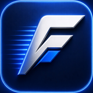

Ferogram
A native, elegant MTProto framework for building Telegram clients and bots.
Talks to Telegram directly over MTProto, no Bot API in between, with one Rust core shared across Rust and Python.
One engine.
Two languages.
Rust and Python run on exactly the same networking, encryption, MTProto implementation, TL parser, transport, update handling, and session management. Python is not a separate reimplementation, it is powered by the same compiled Rust core.

Python calls cross an FFI boundary once, into the same Rust crates that power the native ferogram client.
Same engine, your syntax
Install, write a bot, and read the docs, all in the language you already use.
use ferogram::Client; const API_ID: i32 = 0; const API_HASH: &str = ""; #[tokio::main] async fn main() -> anyhow::Result<()> { let (client, _) = Client::quick_connect("my.session", API_ID, API_HASH).await?; client.send_message("me", "Hello from ferogram!").await?; Ok(()) }
import asyncio from ferogram import Client app = Client("myaccount", api_id=0, api_hash="", phone="+1234567890") async def main(): async with app as client: await client.send_message("me", "Hello from ferogram!") asyncio.run(main())
Built for production
- Native Rust core
- Async from the ground up
- Single-task connection I/O, no lock contention
- Efficient TL serialization
- Direct MTProto, no Bot API in between
- Current API layer, kept up to date
- Pluggable session backends
- Gap-safe update handling (pts/qts/seq)
- Composable filters
- Finite-state conversations
- Inline keyboards and rich text
- Drop to raw TL calls when you need to
- Rust and Python, same core
- One protocol implementation to trust
- Fixes and speedups land in both at once
- Voice and video calling via TgCalls
Everything a real client needs
MTProxy, rich messaging, CDN downloads, high-speed transfers, and steady performance under load, plus a lot more that doesn't fit in a headline.
The goal is to stay out of your way: simple things should be simple, and advanced things should still be possible.
Bring calls into it too
TgCalls extends the same client with voice and video calling, no separate stack to learn.


TgCalls
An elegant Rust client for Telegram voice and video calls.
Bridges Telegram's calling stack with a clean Rust API. Join group calls, stream audio or video, and handle direct P2P calls, built on ferogram and powered by ntgcalls.
let calls = Calls::new(client); calls.play(chat_id, "song.mp3").await?;
The simplest way to play audio in a group call, Calls handles join, voice-chat creation, and media detection for you.
let calls = Calls::new(client); calls.play(chat_id, "song.mp3").await?;
use tgcalls::Calls; #[tokio::main] async fn main() -> anyhow::Result<()> { let mut args = std::env::args().skip(1); let chat_id: i64 = args .next() .expect("usage: simple_calls <chat_id> <file>") .parse()?; let path = args.next().expect("missing audio file path"); let api_id: i32 = std::env::var("API_ID")?.parse()?; let api_hash = std::env::var("API_HASH")?; let (client, shutdown) = ferogram::Client::quick_connect("tgcalls.session", api_id, &api_hash).await?; let calls = Calls::new(client); calls.play(chat_id, path).await?; println!("Playing. Press Ctrl+C to stop."); tokio::signal::ctrl_c().await?; calls.leave(chat_id).await?; drop(shutdown); Ok(()) }